Introduction
Below you can see a screenshot of the single-page website you will create.
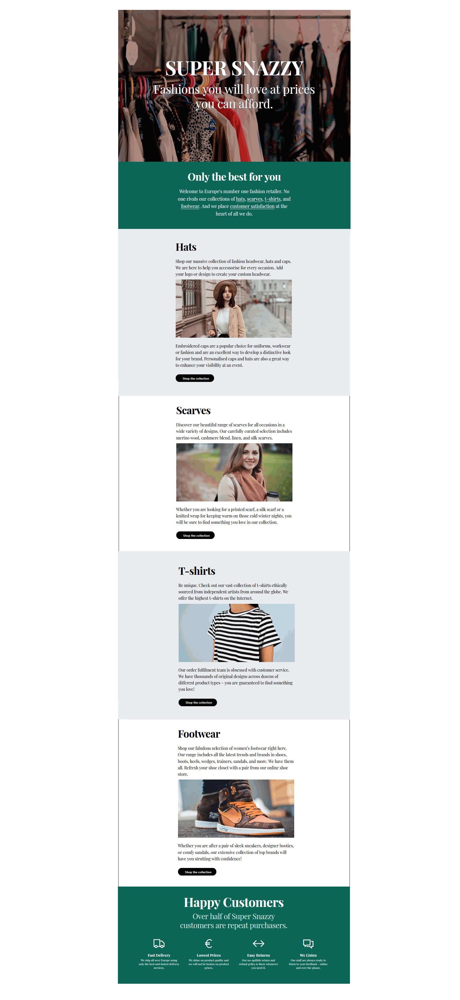- In the <header> or 'hero block' is a background video playing in a continuous loop.
- In the <main> part are six <section> blocks of content. Two have fawn-coloured background (.theme-2), two have a white (default) coloured background .theme-3, and two have a dark green background .theme-1 and .theme-4. The first five <section> blocks have a single-column layout. That last has a four coloumn layout.
- All text on the web page is in the 'Playfair Display' font from Google Fonts.
Portfolio project folders and files
Your first task is to create the folders you need for this project.
- For your first project, the Van Gogh project, you created a new folder named 📁 portfolio inside your ‘main’ 📁 websites folder.
 Inside this 📁 portfolio folder, create a sub-folder to hold the files for your Fashion project.
Inside this 📁 portfolio folder, create a sub-folder to hold the files for your Fashion project.
 Name the new sub-folder as 📁 fashion (all small letters).
Name the new sub-folder as 📁 fashion (all small letters). - Inside this new folder, create an 📁 assets sub-folder. And inside this, create a 📁 CSS sub-folder, an 📁 img sub-folder, and a 📁 videos sub-folder. 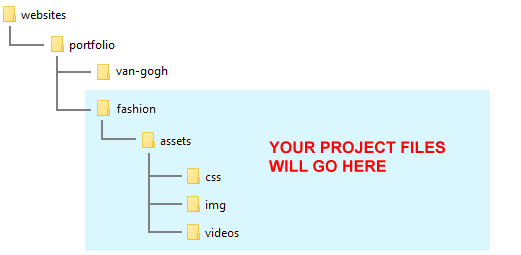
✅ All done. You now have created the folder with sub-folders for your Fashion web page project.
Project resources
Your next task is to obtain the various files needed for your Fashion project.
Web page
Save the following 'starter' web page to your 📁 fashion folder with the file name of index.html:
Ensure the Save as type: dropdown list is set to Webpage, HTML only (*.HTML, *.htm).

Stylesheets
Save the following two stylesheet files to your 📁 fashion/assets/css sub-folder:
Your folders and three files (one web page and two stylesheets) should now look as shown below.
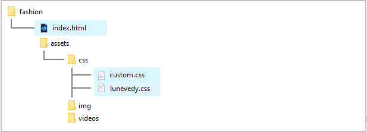Project text
All the text you need for this web page is in the file below. Only <p> tags have been used for basic formatting.
You do not need to download this file. You can simply copy-and-paste from it.
Project images
Download the following four images to your 📁 fashion/assets/img sub-folder.


Project video and poster image
Download the following video file and poster image to your 📁 fashion/assets/videos sub-folder.

{kind=link}

✅ That's it. You now have all the resources you need to begin working on your Fashion project.
Launching the Lunevedy app and VS Code
Click the link below to open the Lunevedy app in a new tab of your web browser.
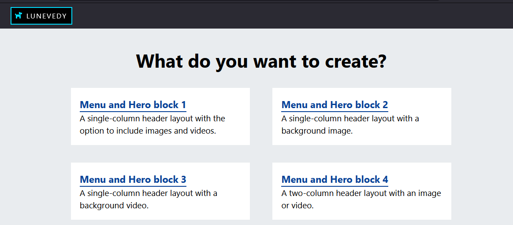Next, start VS Code and open the two files below.
- fashion/index.html
- fashion/assets/css/custom.css

You are now ready to build the various content blocks of your web page.
Creating the main content layout
You will begin by creating the four section blocks to hold the main content of your web page. You will use two CSS classes: section-selector-1 and section-selector-2.
Working with the first two <section>s of <main> in Lunevedy
On the Home page of the Lunevedy app, click the Single Column option.

On the next screen displayed, choose the following menus and options:
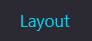
Section Class
Choose section-selector-1.
Background
Click Color and choose any light-coloured background.
You are now finished with the Layout menu.
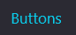
Buttons
Choose One.
Style
Choose Pill.
You are now finished with the Buttons menu.
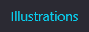
Illustrations
Turn On this switch.
Image
Accept the default option of Picture.
You are now finished with the Illustrations menu.
Next, click the HTML button at the bottom-right of the screen.

Working with the first two <section>s of <main> in VS Code
In VS Code, display the index.html web page. After the opening main tag, paste in the copied text. You can remove any unnecessary line breaks.
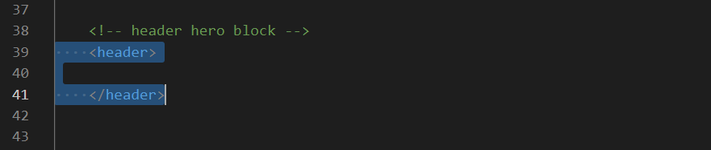On the text you have just copied-and-pasted, perform the following three tasks:
- Delete the third p paragraph of sample text.
- Cut-and-paste the figure tag, which contain the sample image, from between the two p text paragraphs up to under the h2 sub-heading.
- Cut-and-paste the container-btn div tag, which contains the button, to the end of the section.
Your section of content with the sample text and image should now look as shown below.
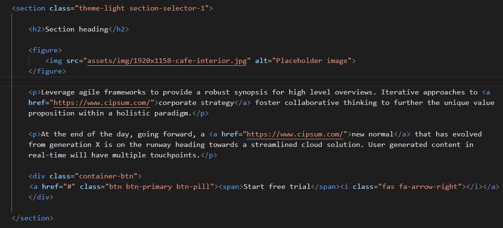Select the section you have just worked with, including the opening <section> and closing </section> tags, as shown below.

Copy-and-paste this directly under the first section as follows.
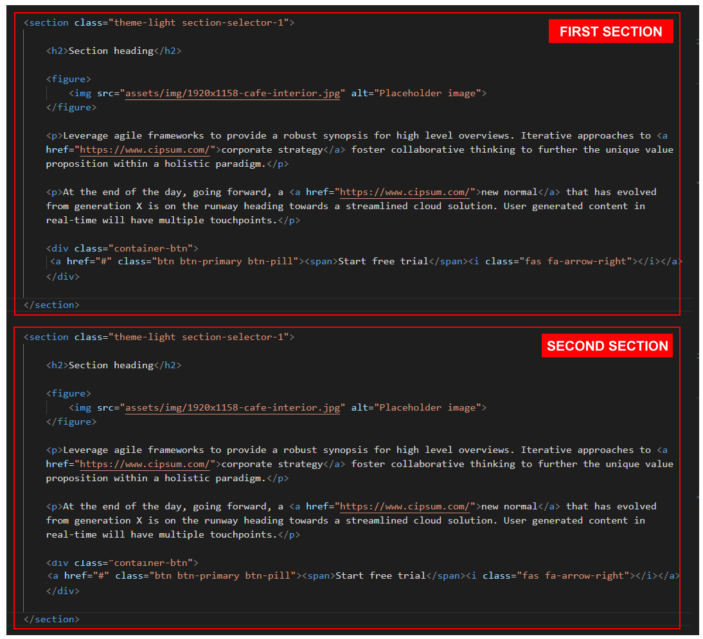You now have two section blocks of content in your web page, each with the same class name of section-selector-1.
Save your index.html page in VS Code.
Working with the second two <section>s of <main> in Lunevedy
Return to the Lunevedy app. And choose the following menus and options:
Section Class
Choose section-selector-2.
Background
Choose the Color of white-000.
That's it.
Next, click the HTML button near the bottom-right of the screen.
Working with the second two <section>s of <main> in VS Code
In VS Code, display the index.html web page. Between the first section the second section blocks of content, paste the text from the Lunevedy app. You can remove any unnecessary line breaks.

As before, perform the following two tasks on the text you have just copied-and-pasted:
- Delete the third p paragraph of sample text.
- Cut-and-paste the figure tag, which contain the sample image, from between the two p text paragraphs up to under the h2 sub-heading.
- Cut-and-paste the container-btn div tag, which contains the button, to the end of the section.
Finally, copy-and-paste this new block of content after the third section.
You now have four section blocks of content in your web page.
- The first and third have a class name of section-selector-1.
- The second and fourth have a class name of section-selector-2.
If there are any empty section tags in your web page, you can delete them.
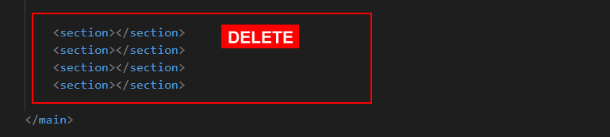Save your index.html page in VS Code.
Copying the CSS from Lunevedy to VS Code
Return to the Lunevedy app and, at the bottom-right of the screen, click the CSS button.
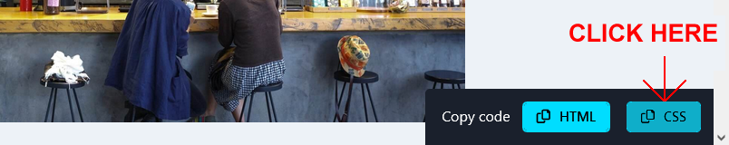In VS Code, display your cusom.css stylesheet file, and paste in the CSS from the Lunevedy app. Your stylesheet should now look as follows.
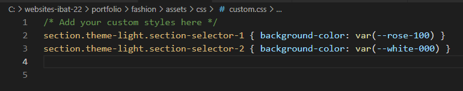As you can see, the only difference between the section-selector-1 and section-selector-2 sections is the background colour.
Save your custom.css file in VS Code.
In your web browser, your index.html page should now look similar to that below.
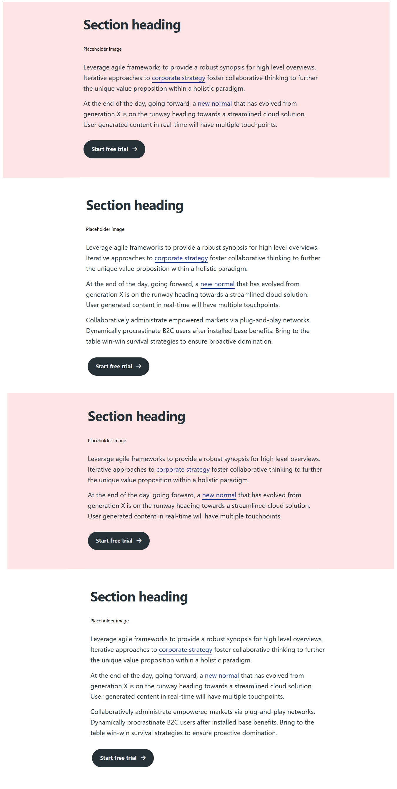Updating the content of the main <section>
Update the content of the four section blocks within the main section with the supplied images and the words from text.html.
Save your index.html file when finished.
✅ You have now completed the four product blocks of your Fashion web page.
Creating the ‘deckhead’ layout
As a web page designer, you do not want to show visitors too much information too soon. So it's a good idea to place a short block of introductory text under the header 'hero block' before you list your products or services in detail.
In the US, this short introduction is called a 'deckhead'. In the UK, it's known as a 'standfirst'.
The 'deckhead' will be the first section block after the opening main tag.
Working with the deckead in Lunevedy
In the Lunevedy app, you currently have open the 'Single Column' layout screen. You can also use this to create the deckhead.
Reload the Lunevedy screen. This will remove all your previous HTML and CSS settings.
At the bottom left of the screen, click the Dark Theme icon for Default colors.
Next, choose the following menus and options:
Section Class
Choose section-selector-3.
Align
Choose the Centre-align icon for both desktop and mobile screens.
Background
Choose the Color of green-000.
You are now finished with the Section menu.
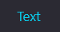
Heading <h2>
Choose the Color of white-000.
Standfirst/
Deckhead
Switch this to On.
You are now finished with the Text menu.
Next, click the HTML button near the bottom-right of the screen.
Working with the deckhead in Lunevedy
In VS Code, display the index.html web page. Just after the opening main tag, paste in the copied text from Lunevedy.
Delete everything from this text except the sub-heading and first paragraph as shown below.
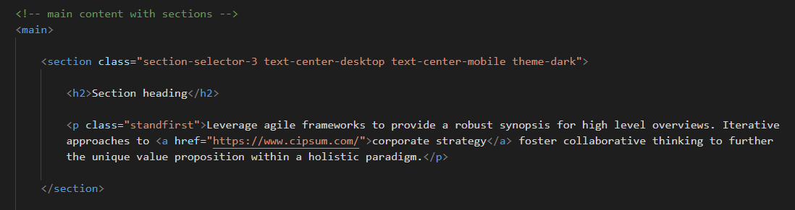Update the deckhead with the words from the text.html file.
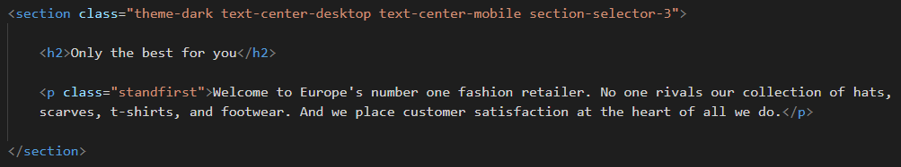Save your index.html page.
Copying the deckhead CSS from Lunevedy to VS Code
Return to the Lunevedy app and, at the bottom-right of the screen, click the CSS button.
In VS Code, display your cusom.css stylesheet file, and paste in the CSS from the Lunevedy app. Your stylesheet should now look as follows.
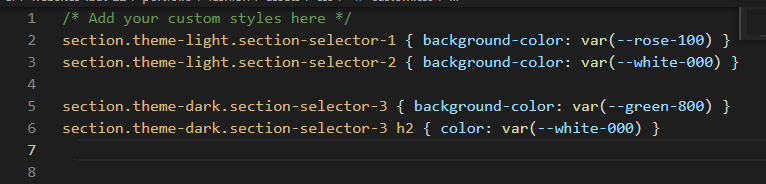Save your custom.css file.
In your web browser, your deckhead should look similar to the following.

✅ You have now completed the deckhead/standfirst block of your Fashion web page.
Creating the hero block layout
Display the Home page of the Lunevedy app and choose the Menu and Hero Block 3 option.
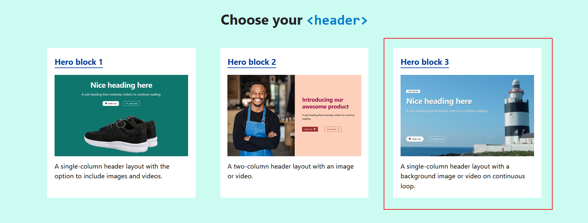Your screen should look as shown below.
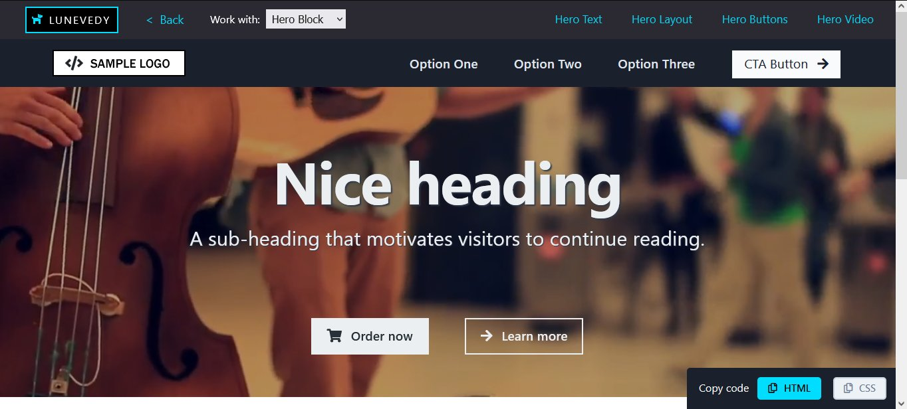Next, choose the following menu and option:
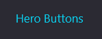
Buttons
Choose None
When finished, click the HTML button near the bottom-right of the screen.
Because you have not updated any of the default colours in the 'hero block', the CSS at the bottom-right of the screen is not enabled.
Working with the hero block in VS Code
In VS Code, display the index.html web page.
Select the opening and closing nav and header tags.
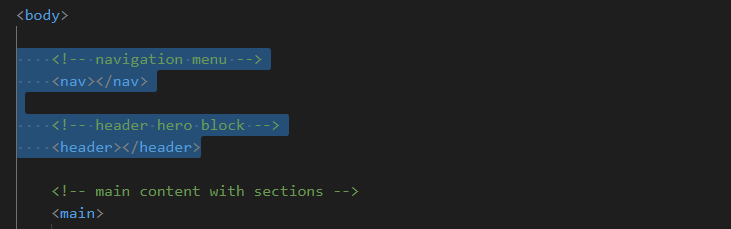Now, paste in the copied text.
Your VS Code screen should now look as shown below.

Your pasted content contains both a navigation menu ('navbar') and a hero block. For this exercise, you can delete the nav block and keep the header block.
Update the hero block with the image file hero-still.jpg and video file hero-video.mp4 from the assets/videos sub-folder, and the words from the text.html file.
Save your index.html file. Display it in your web browser. It should look as shown below.

To speed up the loading of the hero-still.jpg poster image for the background video, copy-and-paste the following code just after the "Preload hero image" comment line in the head.
<link rel="preload" href="assets/videos/hero-still.jpg" as="image">
The final code should look as shown below.
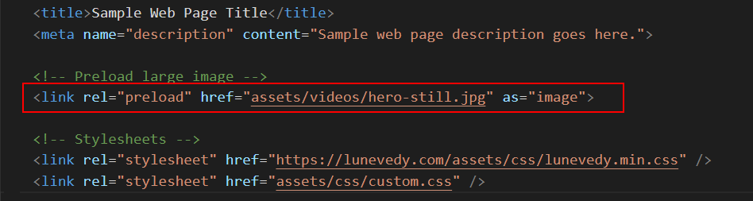✅ Excellent. You have now completed the hero block of your Fashion web page.
Creating the 'happy customers' layout
Lastly, you will create a four-column 'customer satisfaction' section block that will be positioned at the bottom of the web page.
Working with the 'happy customers' layout in Lunevedy
On the Home page of the Lunevedy app, click the Four columns option.

On the next screen displayed, at the bottom left of the screen, click the Dark Theme icon for Default colors.
Next, choose the following menus and options:
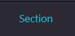
Class Name
Choose section-selector-4.
Background
Choose the Color of green-800.
You are now finished with the Section menu.
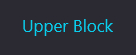
Upper Heading <h2>
Choose a Color of white-000.
Sub-heading <h3>
Choose a Color of white-000.
You are now finished with the Upper Block menu.
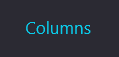
Align
Choose Center.
Headings <h3>
Choose a Color of white-000.
You are now finished with the Columns menu.
ICONS
Choose Line Awesome.
Size
Choose Small.
Color
Choose white-000.
You are now finished with the Illustrations menu.
Next, click the HTML button near the top-right of the screen.
Working with the 'happy customers' layout in VS Code
In VS Code, display the index.html web page. Just before the closing </main> tag, paste in the copied text.
Save your index.html page.
Working with the 'happy customers' CSS
Return to the Lunevedy app. At the bottom-right of the screen, click the CSS button.
In VS Code, display the custom.css file, scroll down to the bottom, and paste in the copied style rules. Your stylesheet should now look as follows.

Save your custom.css file. In your web browser, your page should now look as shown below.
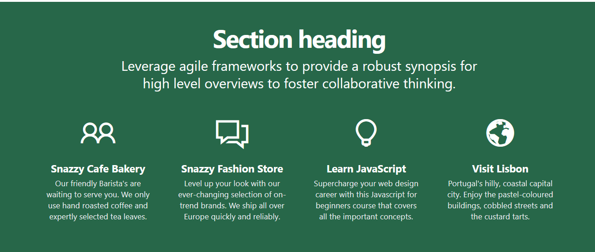Update the 'customer satisfaction' block with the words from the text.html file.
Update the four icons from Line Awesome as follows:
- <i class="las la-truck"></i>
- <i class="las la-euro-sign"></i>
- <i class="las la-arrows-alt-h"></i>
- <i class="las la-comments"></i>
You have now completed this final content block of your Fashion web page.
You can delete the footer and script elements at the bottom of the web page. They are not required for this project.

Adding the final touches
In the head of your web page, remove the links to the Google Material Design icons.

Update the title and description as follows:
- Super Snazzy Fashion
- Europe's leading online retailer of quality fashion products at affordable prices.
Also, at about line 15, replace the link to the lunevedy.css stylesheet with the 'minified' link of lunevedy.min.css.
<link rel="stylesheet" href="assets/css/lunevedy.min.css" />
You can download this faster-loading version of the stylesheet to your 📁 assets/css sub-folder from here.
Finally, add the Google Font of 'Playfair Display' as the global font for the web page. Select just two versions of the font: Regular 400 and Bold 700.
Add the font code to the head of the web page in the usual way.

And then add this line to the top of the custom.css stylesheet.

Save your index.html and custom.css stylesheet.
✅ Excellent. You have now completed your Fashion project web page.
Uploading your files to GitHub
After finishing your web page and stylesheet, you are now ready to upload them to your account on GitHub.
- Open a new tab in your web browser and go to GitHub.com. If you are not already signed in to your GitHub account, sign in now.

- On your GitHub home page, click the ‘repo’ that holds your web pages. Its name will look as follows, where username is your chosen username on GitHub.
username.github.io

- On the next GitHub screen displayed, click the portfolio folder.
- With your portfolio folder displayed on GitHub, click Add file button. 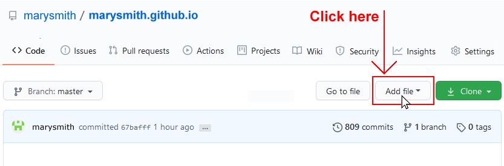
- From the dropdown list displayed, choose the option Upload files. 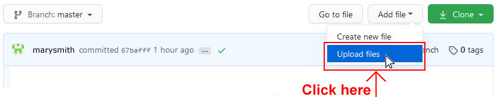
- In File Explorer (Windows 10) or Finder (Apple Mac), drag-and-drop your 📁 fashion folder to upload it to the portfolio folder within your repository on GitHub. 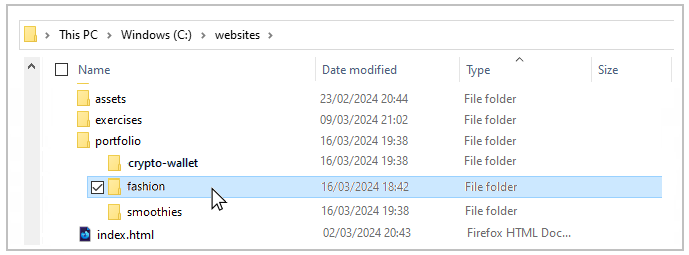
- Scroll down to the bottom of the GitHub screen, and accept or edit the short message (Add files via upload) in the Commit changes box.
- Finally, click the green Commit changes button to upload your files.

Your portfolio project web page is now published on GitHub at a web address similar to the following:
https://username.github.io/portfolio/fashion/index.html
or simply:
https://username.github.io/portfolio/fashion
It may take a few minutes for your uploaded files to appear on GitHub.